Setting Up the App
An SSTP profile has the same fields on iPhone and Android. This page goes through them in the order the profile editor shows them.
The fields, defaults, footers and messages were read from the source code of both apps, and the screenshots were taken from them with example profiles. What each setting did against real servers is in Test results.
Add a profile
Tap + on the home screen, tap Protocol and choose SSTP VPN. Fill in the fields below and tap Save. Save names the first field that is still missing or wrong instead of saving an incomplete profile.
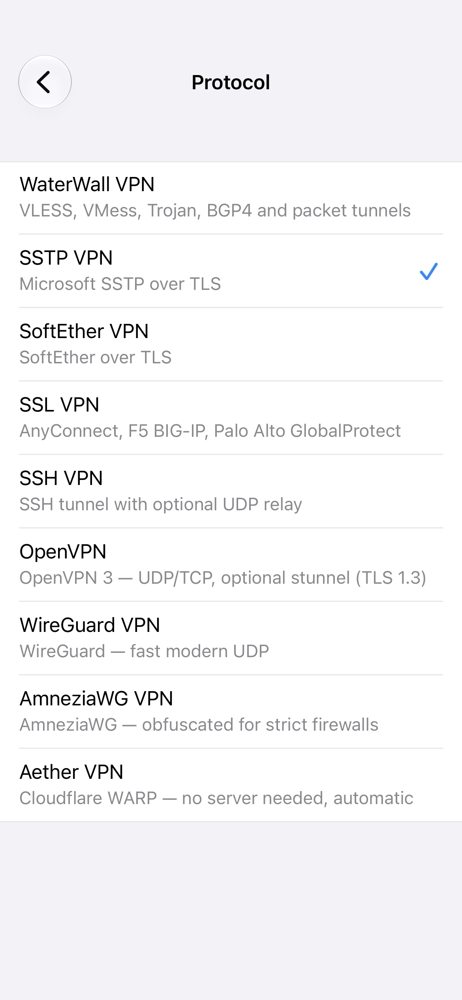
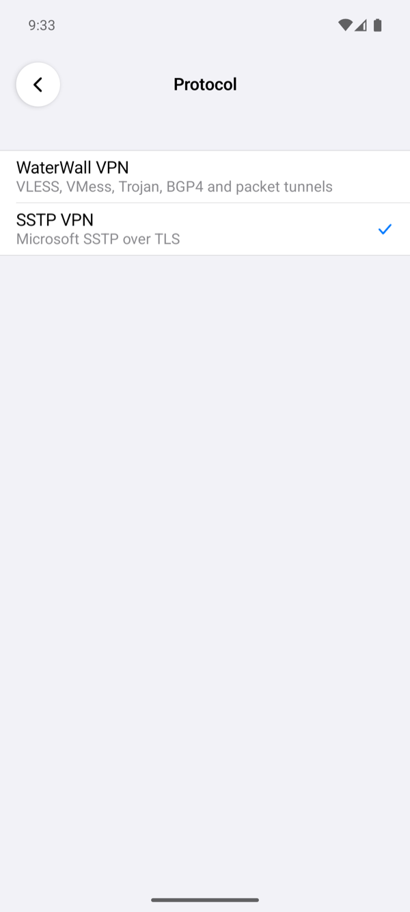
Server
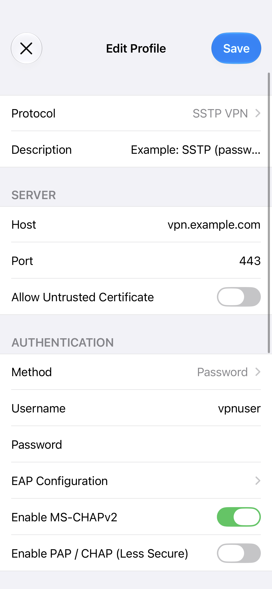
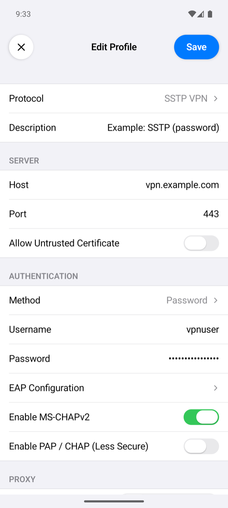
| Field | What to enter |
|---|---|
| Host | The server's DNS name, for example vpn.example.com, or its IP address. The app connects here and, unless Custom SNI is on, checks the certificate against this name. |
| Port | Empty means 443, the SSTP port of all our test servers. |
| Allow Untrusted Certificate | Off by default: the app accepts only a certificate that the phone trusts and that is valid for the name it checks. On skips that check. Leave it off; see the certificate warning. |
Authentication
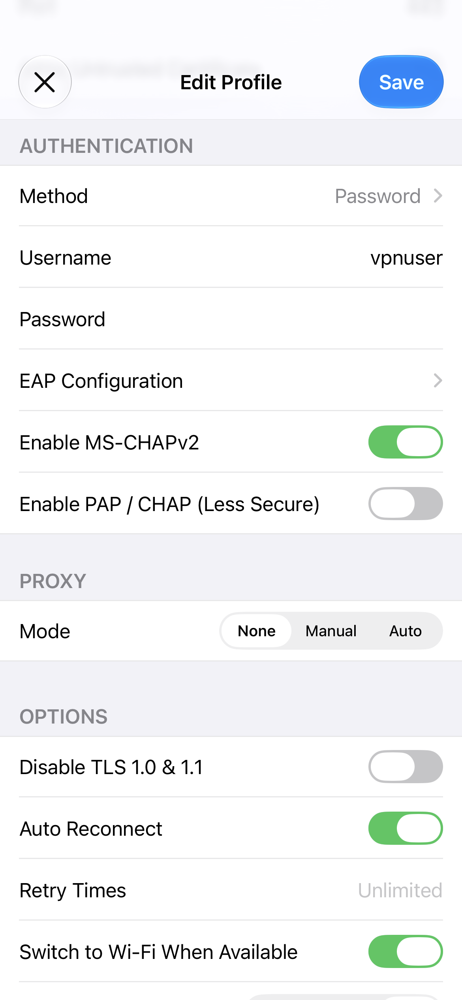

| Field | What it does |
|---|---|
| Method | Password (default) logs in with a username and password. Certificate logs in with a client certificate through EAP-TLS; see Certificate login. |
| Username, Password | The user on the SSTP server or its RADIUS server. With Certificate, the username is optional and is sent as the identity. A password may hold any character, letters of any script included. Windows and FreeRADIUS take a password with characters outside ASCII at once; RouterOS's local secrets and SoftEther hash such a password another way for MS-CHAP, and the app logs in to them at a second attempt it makes on its own, about a second later. |
| EAP Configuration | The EAP methods the app may use; see EAP. |
| Enable MS-CHAPv2 | On by default. MS-CHAPv2 is what MikroTik, Windows and SoftEther accept by default. |
| Enable PAP / CHAP (Less Secure) | Off by default. Turn it on only for a server that allows nothing else; PAP sends the password inside the TLS tunnel without hashing it. |
At least one method must be on: MS-CHAPv2, PAP / CHAP, or an EAP method. The app offers the ones that are on, and the server picks one. When the server accepts none of them, the connection ends with The server closed the connection during PPP negotiation. Check that it accepts one of the authentication methods enabled in this profile.
EAP
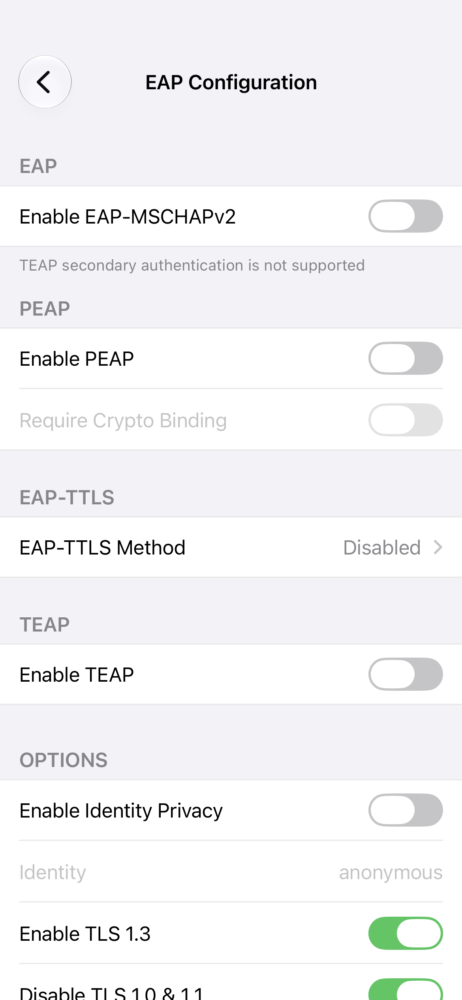
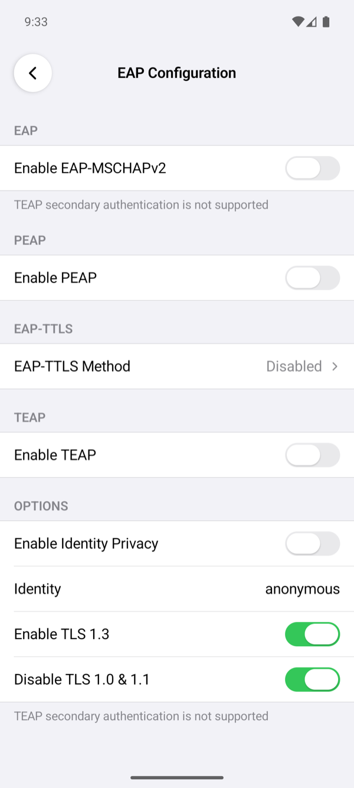
| Setting | What it does |
|---|---|
| Enable EAP-MSCHAPv2 | MS-CHAPv2 inside EAP, without a TLS tunnel of its own. |
| Enable PEAP | A TLS tunnel to the EAP server with EAP-MSCHAPv2 inside. This is what Windows NPS offers by name. |
| Require Crypto Binding | Only with PEAP: the connection fails unless the server proves, with PEAP's crypto binding, that the inner and outer sessions belong together. Windows NPS sends it; FreeRADIUS does not. |
| EAP-TTLS Method | Disabled by default. Otherwise EAP-TTLS with PAP or CHAP inside, or with EAP-MSCHAPv2 inside, which both EAP and MSCHAPv2 choose. In our tests Windows NPS refused EAP-TTLS, and FreeRADIUS took it with each of these inside. |
| Enable TEAP | TEAP without a secondary method. |
| Enable Identity Privacy, Identity | Sends the Identity (default anonymous) instead of the username before the TLS tunnel is up. Windows RRAS with local accounts refuses this outer identity. |
| Enable TLS 1.3 | On by default. Windows NPS has no TLS 1.3 for EAP and ends the exchange on a TLS 1.3 offer; the app then tries once more with TLS 1.2. |
| Disable TLS 1.0 & 1.1 | On by default: the EAP tunnel uses TLS 1.2 or later. |
The app never answers EAP-MD5, even when a server offers it first, because MD5 gives no key for the SSTP crypto binding and no proof of the server.
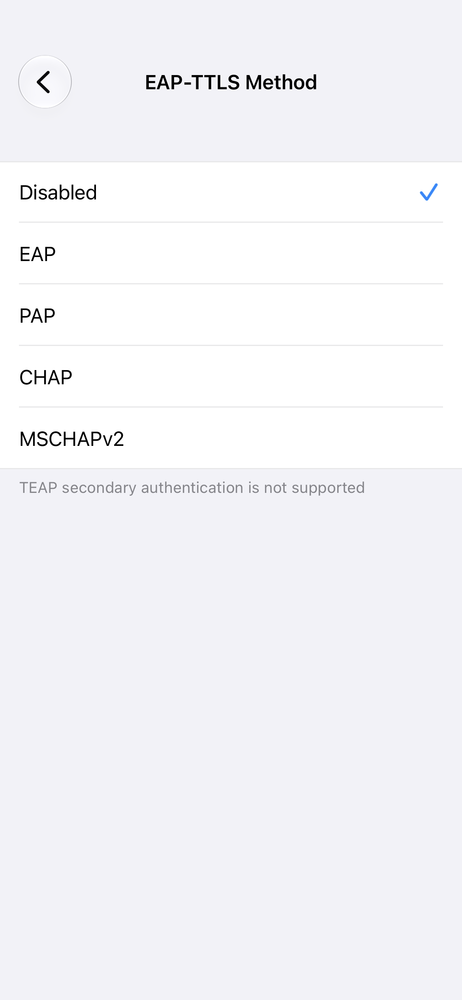
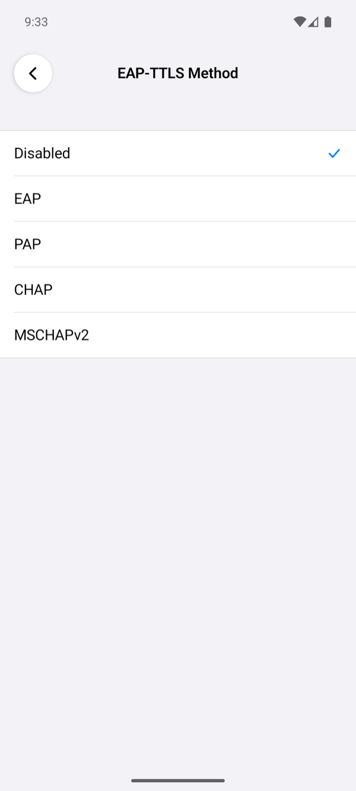
Certificate login
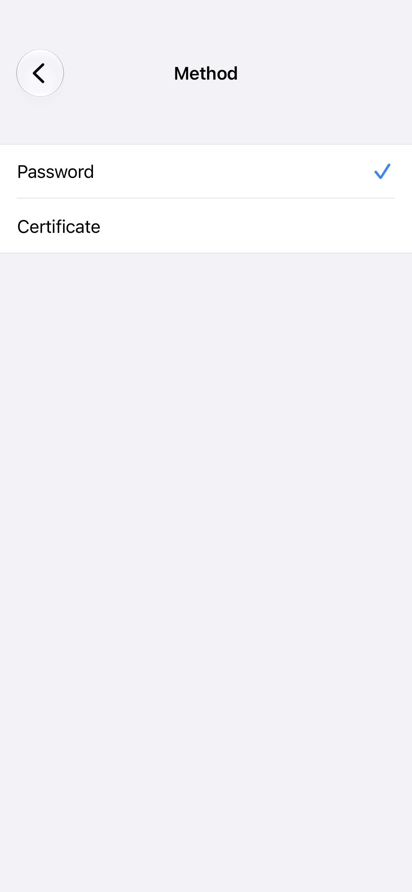
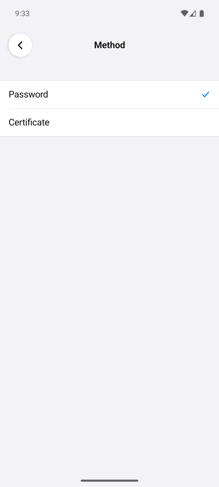
With Method set to Certificate, tap Certificate, then Import, and choose a .p12 or .pfx file that holds the client certificate and its private key. The app asks for the file's passphrase and keeps the certificate in the iPhone's Keychain or, on Android, encrypted with a key in the Android Keystore. The server needs EAP-TLS: in our tests that was FreeRADIUS behind Windows Server 2025 (FreeRADIUS).
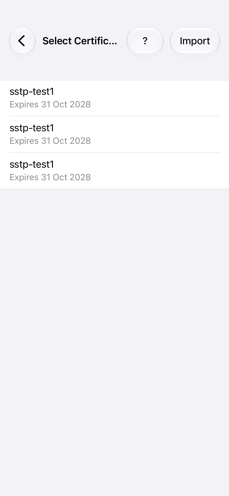
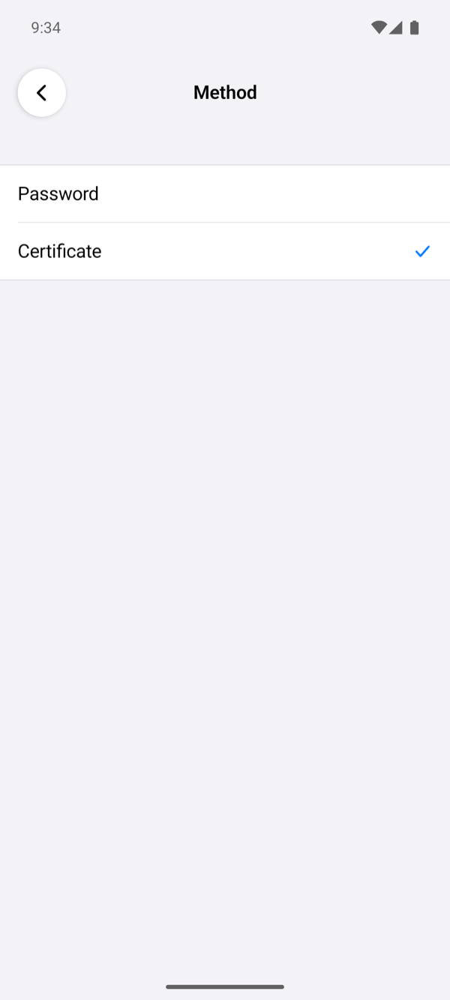
Proxy
The app can reach the SSTP server through a proxy. The proxy carries only the connection to the server; the traffic inside the VPN does not use it.
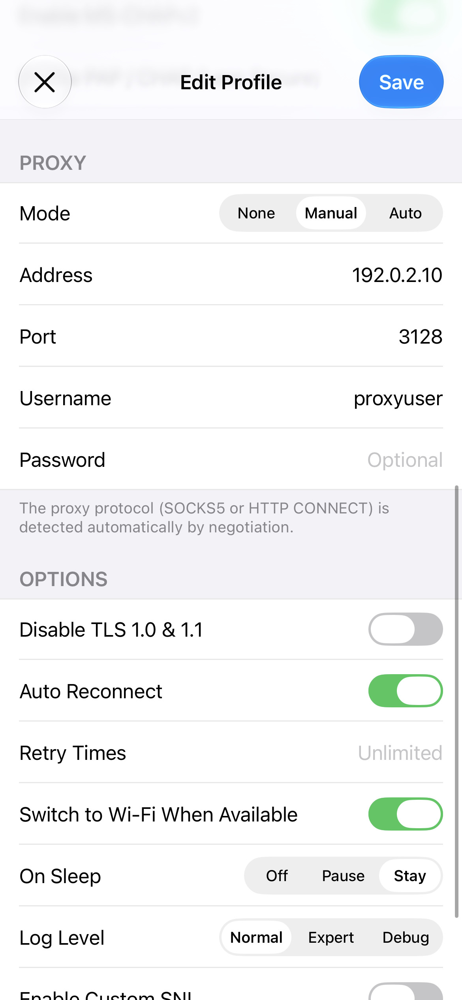
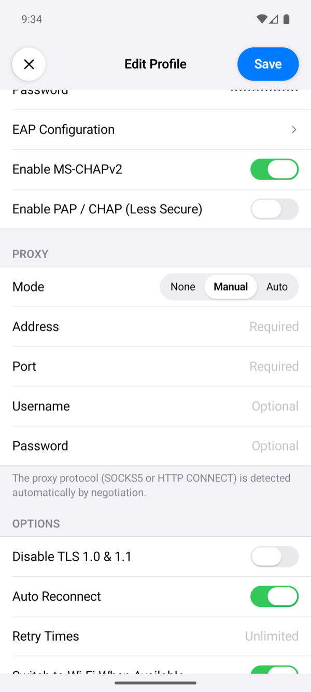
| Mode | What it does |
|---|---|
| None | The app connects to the server directly (default). |
| Manual | The proxy at Address and Port. The app finds out whether it is a SOCKS5 or an HTTP CONNECT proxy by trying SOCKS5 first and, when the proxy does not answer as SOCKS5, HTTP CONNECT on a new connection. Username and Password are optional and go to the proxy when it asks for them. |
| Auto | A proxy auto-configuration (PAC) file at PAC URL, over http or https. The app runs its FindProxyForURL for the server and tries the proxies it returns in order. The username and password go to the proxy the script picks. |
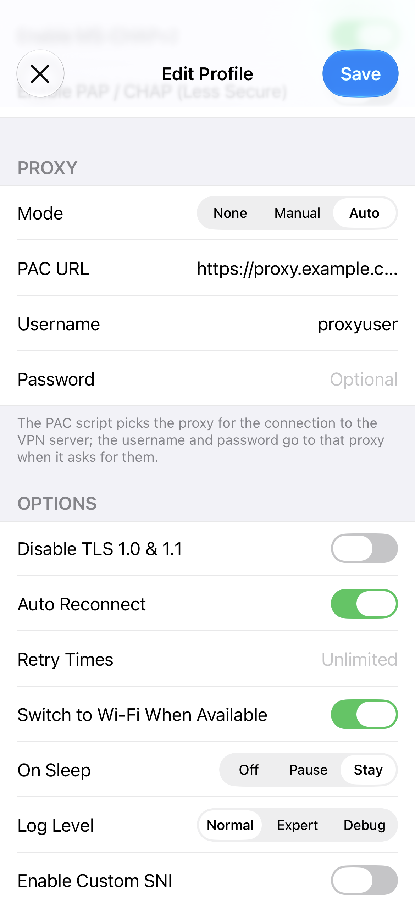
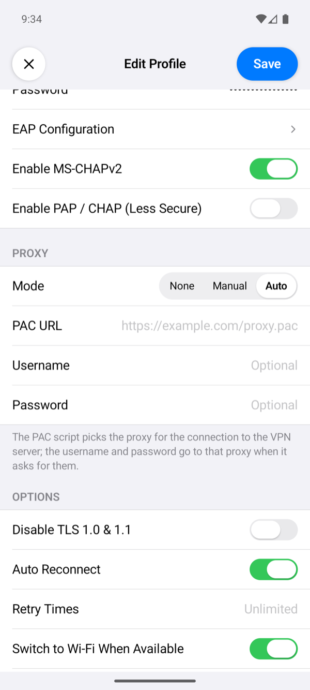
Options
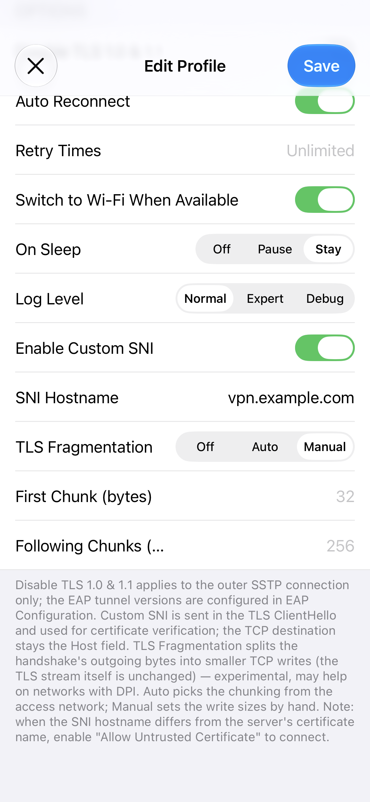
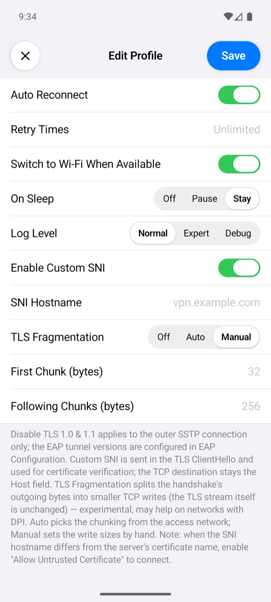
| Option | What it does |
|---|---|
| Disable TLS 1.0 & 1.1 | The connection to the server uses TLS 1.2 or later. It applies to that connection only; the EAP tunnel has its own switch. |
| Auto Reconnect, Retry Times | Auto Reconnect (on by default) connects again 2 seconds after a connection that was up is lost. Retry Times limits the attempts in a row; empty means no limit. A login the server refused is never retried: the password or certificate must be fixed first. |
| Switch to Wi-Fi When Available | On by default: when Wi-Fi appears while the VPN is up, the app moves the connection to it. |
| On Sleep | Stay (default) keeps the connection while the device sleeps. Pause closes it and connects again on wake. Off closes it; on wake it connects again only with Auto Reconnect, otherwise the VPN ends. |
| Log Level | How much the connection log shows. Normal: the milestones, such as the server the app connects to, the SSTP and PPP states, the addresses the server gave, and errors. Expert adds the TLS name the app checks, each PPP phase and the login methods the profile offered. Debug adds the SSTP client's and PPP's own lines, such as the SSTP connect request and the result of the PPP login. No level writes the password or TLS session secrets. When the app gives up on a connection, a line starting with SSTP: closing with reason: names the reason. Tap the status under the power button to open the log. |
| Enable Custom SNI, SNI Hostname | Sends another name in the TLS ClientHello and checks the certificate against that name, while the connection still goes to Host. The name must be a bare hostname. |
| TLS Fragmentation | Splits the outgoing bytes of the TLS handshake into small TCP writes; the TLS data itself is unchanged. Auto sends the first 43 bytes on their own, so that the server name lands in a later write, then 256 bytes per write (128 on cellular) with a few milliseconds between writes. Manual takes First Chunk (1 to 4096 bytes, default 32) and Following Chunks (1 to 16384, default 256). |
The certificate warning
Before an SSTP connection starts, the app checks the server's certificate the way the tunnel will: it must chain to a root the phone trusts and be valid for the Host, or for the Custom SNI when that is on. When it is not, the app shows DANGEROUS! with each certificate of the chain and what is wrong with it, for example Hostname does not match the certificate or Root is not trusted.
- Continue connects this once without checking the certificate.
- Save and Continue turns on Allow Untrusted Certificate in the profile and connects.
- Cancel does not connect.
Connecting to a server's IP address instead of its name usually brings this warning, because the certificate names the server, not its address. Use the name, or turn on Custom SNI with the name.
Connect and check
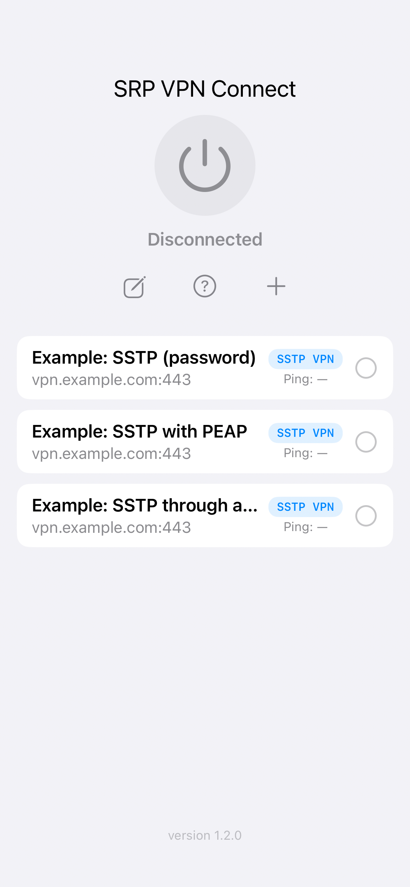
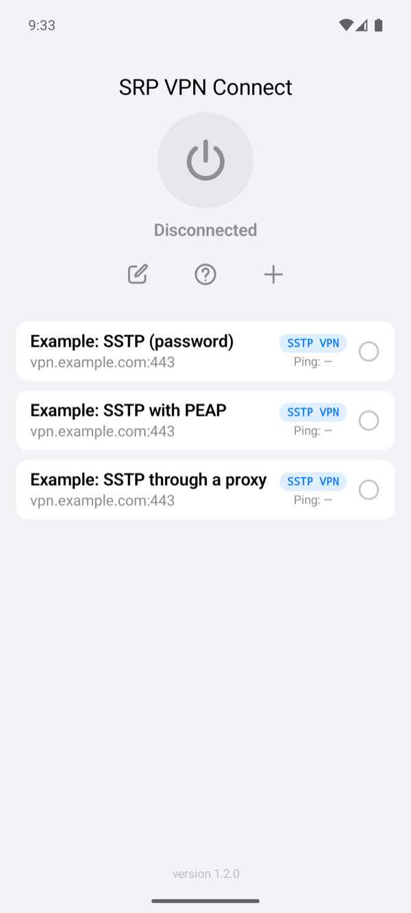
Select the profile on the home screen and tap the power button. The status changes to Connected once the server has assigned the phone an address. The row of the profile then shows the time of one request through the tunnel. If it fails, the app shows Connection Failed with a reason; Troubleshooting explains each one.